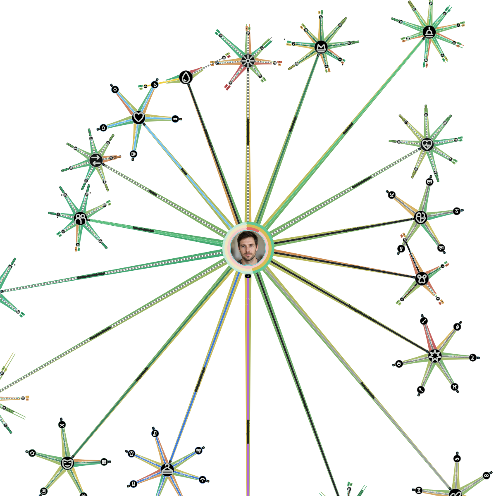

Rowan’s 2.0 hypermap
Explore Rowan’s fictional sample profile — the current map structure, with smaller subcategory hubs grouping related topics.

Open full size This sample uses the full viewport SVG, including all categories and subcategory hubs. For your own map exports, choose SVG (recommended); PNG is also supported.
Example Story Output
A Literotica-style opening shaped by one fictional kink map.
Avery waited at the foot of the bed, pulse quickening as the soft leather cuff closed around their wrist. The quiet click of the buckle made the anticipation feel suddenly real, and the hand at the back of their neck was firm enough to make them exhale. “Tell me your color,” their partner murmured, holding the moment there until Avery answered, “Green.” Only then did the teasing begin—slow, deliberate, and exactly as merciless as Avery had hoped.
Example Play Guide Output
A coordination-first excerpt for a fictional couple.
- Shared interests: Build around mutual enthusiasm for blindfolds, light restraint, teasing, praise, and a clear top/bottom dynamic.
- Try first: Begin with a blindfold and one soft wrist restraint; keep the first round short so both partners can calibrate intensity.
- Add next: Layer in verbal direction and controlled teasing before introducing impact play; agree on the implement and intensity first.
- Communication: Use green/yellow/red, plus a nonverbal backup signal if speech becomes difficult. Pause immediately on yellow to check and adjust.
- Respect the map: Favorites can lead the scene, fantasy-only interests stay in imagination, and anything marked as a limit stays out completely.
- Aftercare: Plan for water, warmth, physical closeness if wanted, and a low-pressure check-in later that evening and again the next day.
Example Overlap — what Blind Compare shows
Only mutually green branches from two fictional profiles.
- Blindfolds
- Light bondage
- Giving orders
- Following orders
- Praise
- Dirty talk
- Teasing
- Edging
- Mutual masturbation
- Roleplay
- Spanking
- Hair pulling
- Collars
- Exhibitionism
- Watching
- Body worship
- Erotic photography
- Aftercare
Greenmeans both fictional partners rated that branch positively in compatible directions. Private mismatches and non-overlapping interests are not shown.